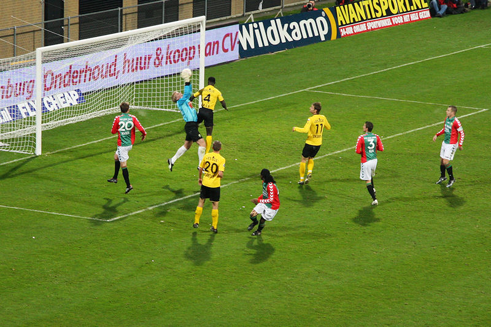

|
Roda JC - ADO
(1-1) 4 december 2009 |
De ADO-fans hebben een portret van Atteveld opgehangen.
Junker alleen op Ditewig af. De doelman is echter eerder bij de bal en maakt
deze kans onschadelijk.
Even later vindt Junker wèl het net nadat deze ontsnapte aan een tackle van
Horvath na een doorkopbal van Skoubo: 1-0, (35').
Een van de vele corners.
Soltani tikt in op een voorzet van Verhoek: 1-1, (57').

Hierna trekt Roda fel in de aanval.
Toornstra haalt een bal van de lijn na een kopbal van Kah.

Als Van Veldhoven Bodor wisselt voor Matondo gaan er op sommige plaatsen witte
zakdoekjes de lucht in.
Foutje Kah brengt Soltani vrij voor Castro. Het schot gaat gelukkig naast.
In de 80e minuut mag Sutchuin na zijn tweede gele kaart inrukken van de
Belgische scheidsrechter Verbist. Roda wordt daarna niet
overlopen maar moet langzaam het maximaal haalbare, een gelijkspel, accepteren.
Het blijft 1-1.
De echte massochisten blijven komen.